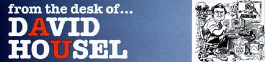

There are four things an Athletic Department, any athletic department, has to do to be successful: win, educate its student athletes, pay its bills and abide by the rules. Those four and nothing more: abide by the rules, pay your bills, win, and educate student athletes. The priority ranking can and does vary from institution to institution, from group to group within the institution, and from individual to individual. That ranking reflects, to some degree at least, one's priorities and values. But this much is certain: Compliance and fiscal responsibility are the cornerstones on which any successful athletic program is built. The cornerstones. If you don't abide by the rules, you won't be able to field a team. If you can't field a team, you won't have the ability to generate the financial resources needed to pay your bills. And if you can't pay your bills, it doesn't matter if your first priority is winning or educating your student athletes. You won't be able to afford either. A successful athletic program starts with compliance and fiscal responsibility. In spite of all the controversy and turmoil last year, the Auburn Athletic Department had a good year. A very good year. Here's an overview: Winning: We won our first SEC men's basketball championship in 39 years and a national and SEC championship in men's swimming. The baseball team hosted and won an NCAA regional and the track team finished fourth in the nation, only 18 points out of first place. Overall, from a competitive standpoint, Auburn finished 20th in the nation. Neither Alabama or Notre Dame were in the Top 20. It was a good year. Education: We finished the year with a graduation rate of 67 percent, higher than the student body as a whole, and the highest athletic graduation rate at Auburn since detailed, accurate records have been kept. It was a good year. Fiscal Responsibility: We finished in the black for the sixth straight year, thanks in large part, in large, large part, to the excellent financial management of Terry Windle, CFO and Senior Associate Director. It was a good year. Compliance: We had no major rule violations or problems. It was a good year. We will be discussing each of these four measures of quality in detail over the course of this season. On Homecoming, we will look forward to the needs and challenges of the future, and at the Alabama game, we'll remember Coach Jordan and how many of the decisions he made seemed wrong in the short run, but were, in the long run, good strong decisions. For Auburn and for everyone else. This is today, however, and today we start a new era of Auburn Football, the Tommy Tuberville era. It promises to be one of our best, and, as we all know, a successful football program is critical to our success in all areas, no matter how one may prioritize those areas. The future is ours for the taking. We intend to take it.
Next Week: Competitive Success TABLE OF CONTENTS | PROGRAM INDEX | HOME © 1999 Auburn Network, Inc. |